Abstract
Joint-embedding predictive architectures (JEPAs) learn compact latent world models without pixel reconstruction. However, existing JEPAs typically learn representations and dynamics independently of downstream control objectives, complicating the pipeline and leaving unexplored how world- and action- learning benefit each other. We introduce LeWAM, an end-to-end JEPA for control with: (1) a joint training objective over next latent state prediction and action flow matching, and (2) an isotropic Gaussian constraint on the latent state, enabling a single model to support direct policy execution and efficient planning by evaluating sampled actions with its learned latent dynamics. Compared with prior JEPAs in visual planning, LeWAM improves success rate from 26.8% to 85.5% on contact-rich tasks and from 10.9% to 46.2% on long-horizon tasks, and plans 32.3× faster. On behavior cloning tasks in simulation and physical robots, LeWAM is also competitive with established methods. Interpretability analyses show that LeWAM learns control-relevant representations and action distributions effectively guiding test-time planning and control.
Architecture details
History, future, and goal images share an encoder. A mixture of transformers (MoT) uses separate state and action transformations with masked attention. In simulation, the encoder and predictor train jointly from scratch with a 192-dimensional latent state.
Clean actions condition future-state prediction; noisy actions learn a velocity field through flow matching. SIGReg regularizes the latent distribution.
The state query reads history and clean actions. Goal and remaining-horizon conditioning enter the action readout only, so dynamics stay goal-independent. The physical-robot study also evaluates a frozen pretrained visual backbone; models are trained separately for each task and embodiment.
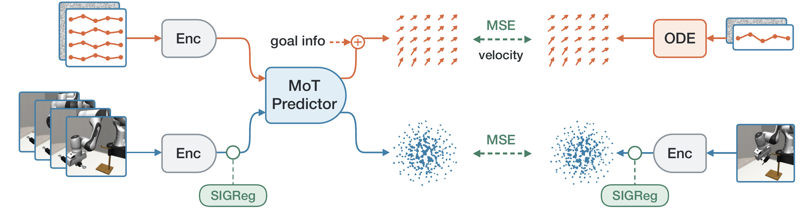
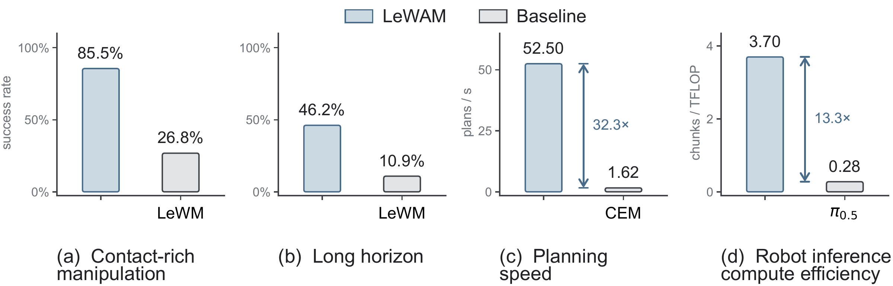
Joint World- and Action- Learning from Pixels
A shared predictor learns dynamics and a stochastic policy from the same visual representation.
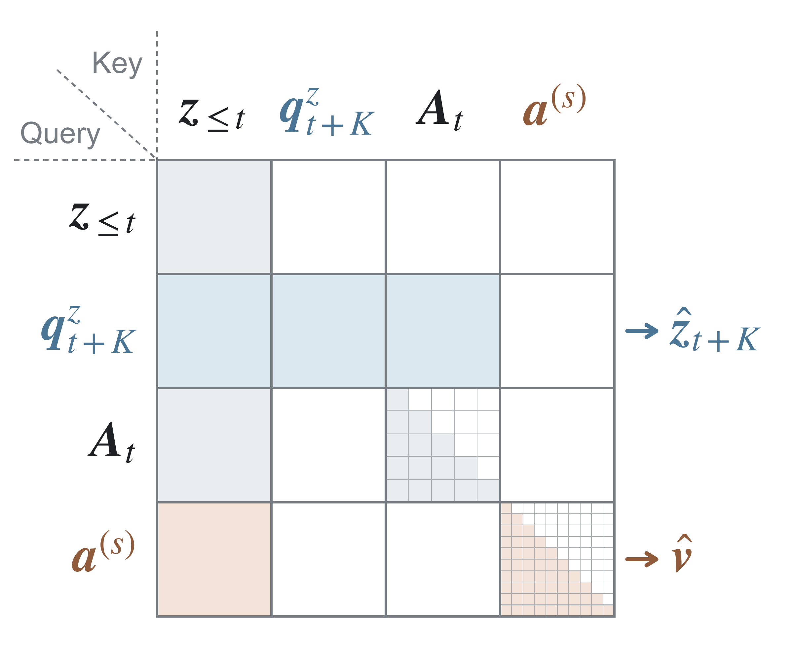
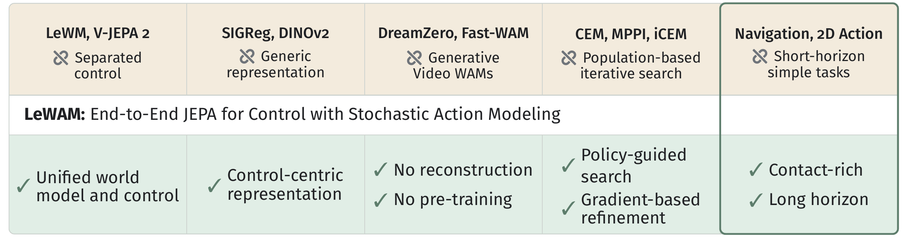
Direct Control and Planning
Act with the policy, or sample and refine plans through the learned dynamics.

Control and planning details
Direct control. The action flow generates a 2K-action chunk; execute its first K actions, observe again, and repeat.
- Sample plans. Alternate stochastic action generation with latent dynamics rollouts.
- Refine and select. Optimize candidates through the frozen dynamics using terminal latent goal error and a proximity penalty; choose the lowest-cost iterate.
Execute the first K planned actions and replan from the next observation.
Heterogeneous Simulated Environments
We evaluate control across ten simulated navigation and manipulation environments.
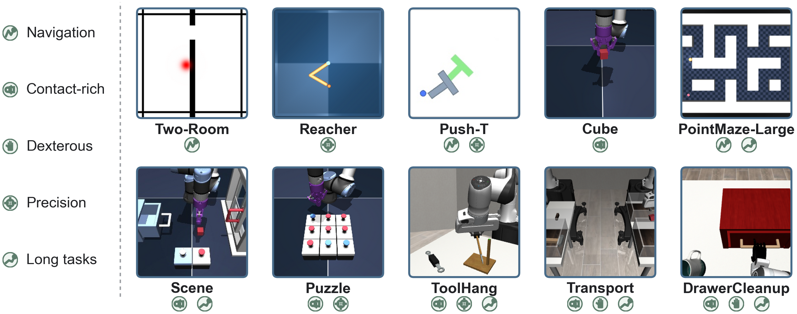
25-step goal reaching
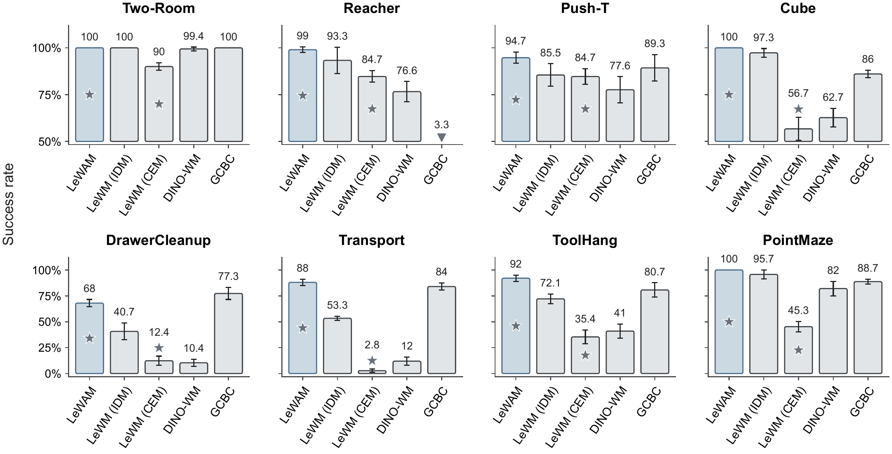
Longer-horizon goals
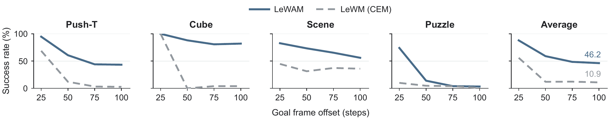
Goal-free task completion
| Method | DrawerCleanup | Transport | ToolHang | Average |
|---|---|---|---|---|
| Diffusion Policy | 54.7 ± 1.2 | 45.3 ± 9.0 | 84.7 ± 3.1 | 61.6 |
| LeWAM | 52.7 ± 5.0 | 61.3 ± 9.9 | 80.0 ± 3.5 | 64.7 |
Direct control from observation history, without a goal image. Separate from goal-reaching results.
Policy Rollouts and Model Visualizations
How to read these videos
The recorded rollout is an actual closed-loop LeWAM policy execution. Both model columns visualize its executed action sequence; the LeWM column is not a separate LeWM policy rollout.
Open-loop prediction starts from initial frames and receives no later ground-truth images. Frame reconstruction encodes and decodes each observed frame. These post-hoc decoders are for visualization only, not control.
The policy's goal frame is 25 steps ahead. Clips are frame-aligned at 10 fps for 5.1 seconds. They are qualitative examples, not success-rate estimates.
Representations and Stochastic Actions
Physical-state probing and SIGReg
| Model | SIGReg | Effective rank | Object R² | Proprio R² | Action R² (IDM) |
|---|---|---|---|---|---|
| LeWAM | Yes | 42.90 | 0.90 | 0.86 | 0.40 (0.75) |
| LeWAM | No | 8.20 | 0.69 | 0.86 | 0.38 (0.73) |
| LeWM | Yes | 94.2 | 0.95 | 0.80 | 0.29 (0.71) |
Probes measure decodability, not control success. Action (IDM) uses one state or a pair of current and future states.
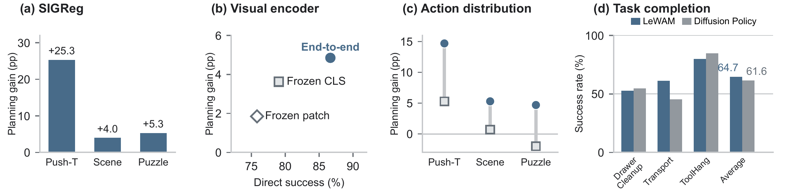
Qualitative action distributions
Two-door navigation: MSE favors the lower passage; flow matching samples both.
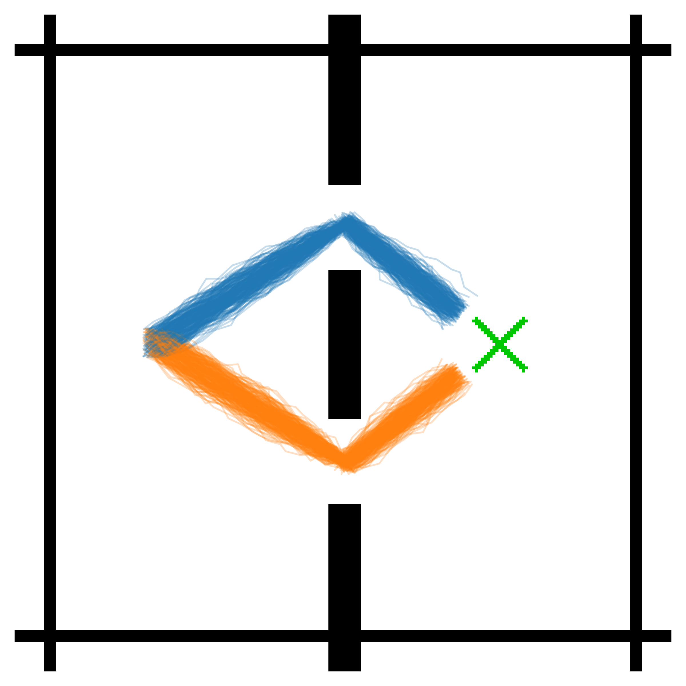
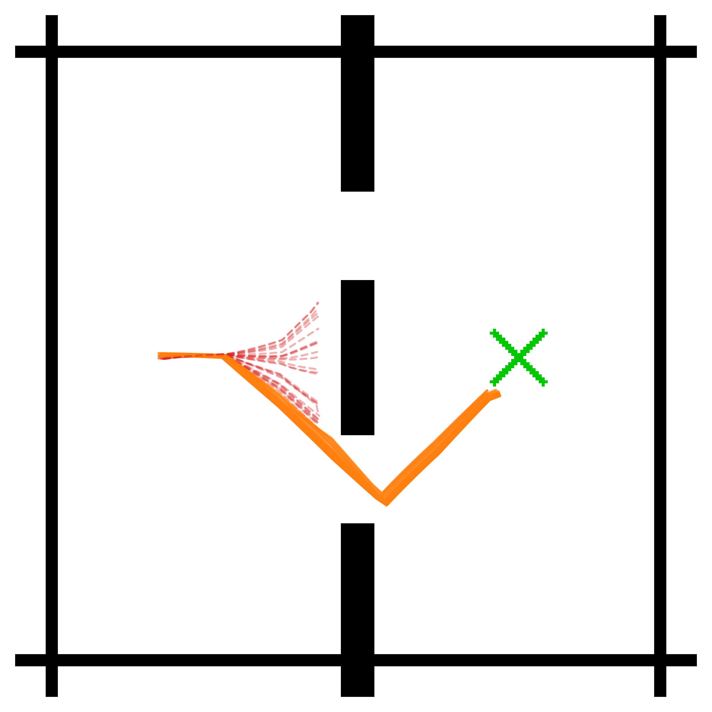
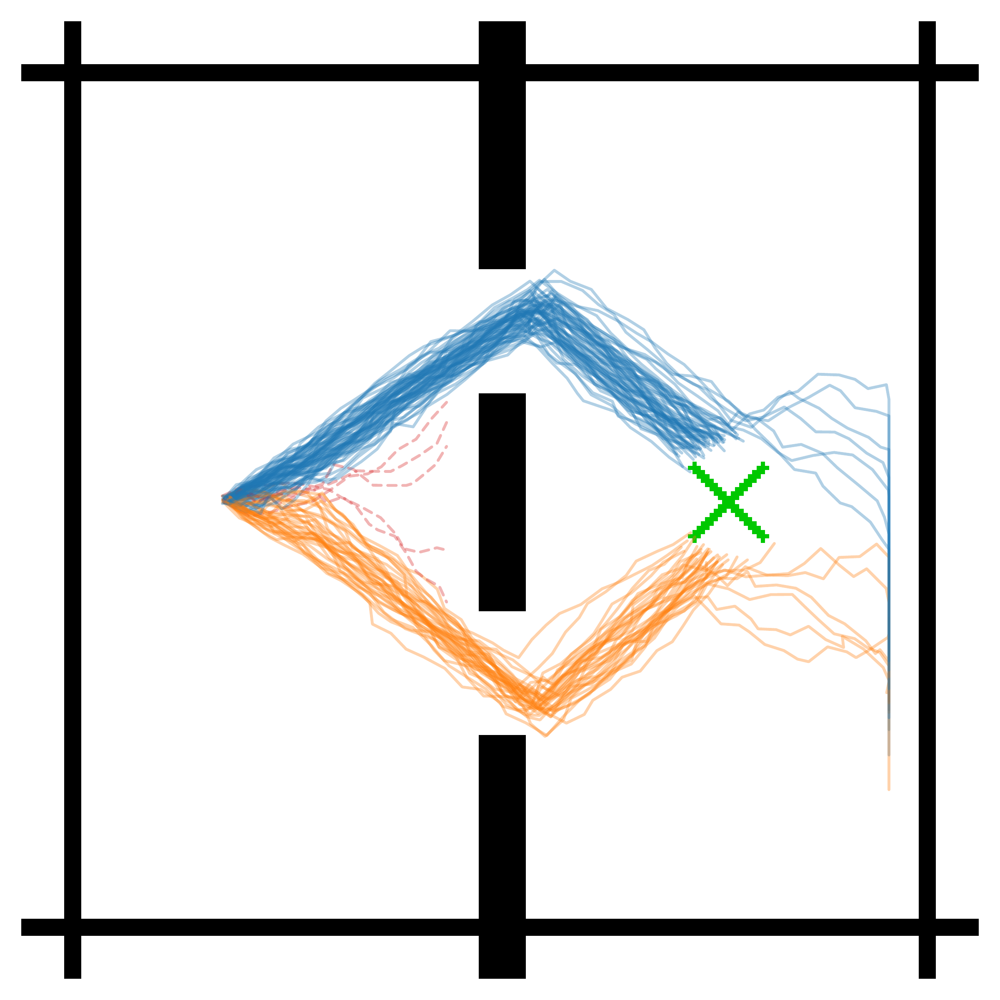
Physical-Robot Control
Three tasks · 30 trials per method, per task.
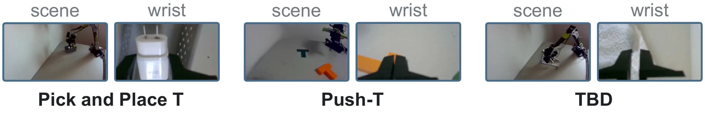
| Method | Pick and Place T | Push-T | Tape Stack | Average | GFLOPs |
|---|---|---|---|---|---|
| Diffusion Policy | 19 / 30 | 16 / 30 | 0 / 30 | 38.9% | 270.0 |
| π0.5 | 14 / 30 | 3 / 30 | 9 / 30 | 28.9% | 3603.6 |
| LeWAM, frozen V-JEPA 2.1 | 15 / 30 | 12 / 30 | 5 / 30 | 35.6% | 270.2 |
| LeWAM, end-to-end | 16 / 30 | 8 / 30 | 6 / 30 | 33.3% | 270.2 |
13.3× fewer operations than π0.5 per action chunk; compute, not measured latency.
Robot evaluation details
The study compares end-to-end LeWAM and a variant with a frozen V-JEPA 2.1 visual backbone against Diffusion Policy and π0.5.
A scene camera and a wrist camera feed a seven-DoF robot policy. A remote inference machine returns action chunks; the robot executes joint targets at 30 Hz. GFLOPs count the full action-chunk inference, including denoising steps.